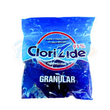
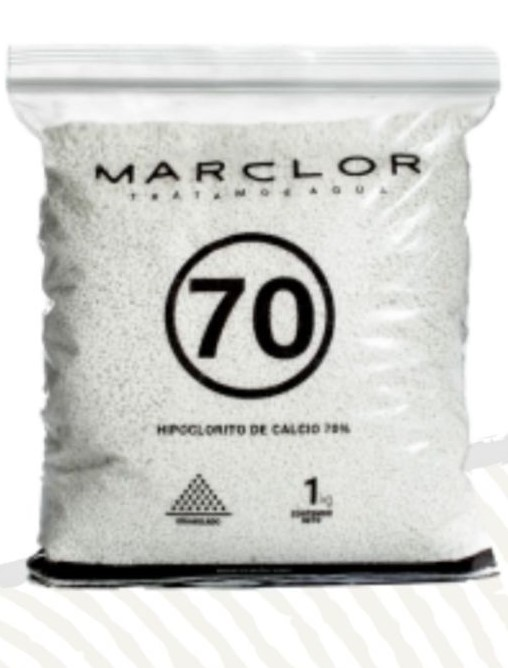
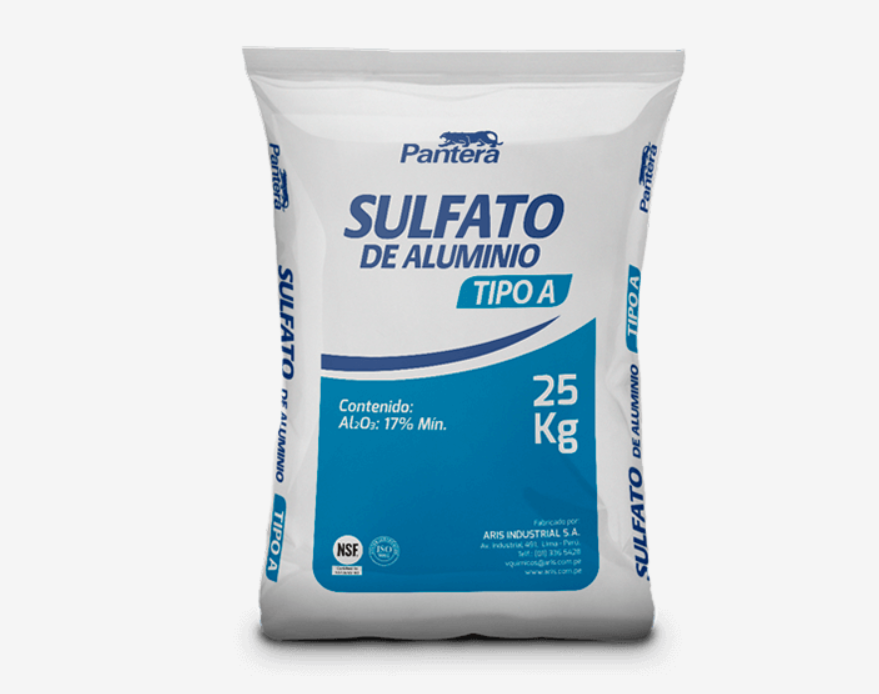
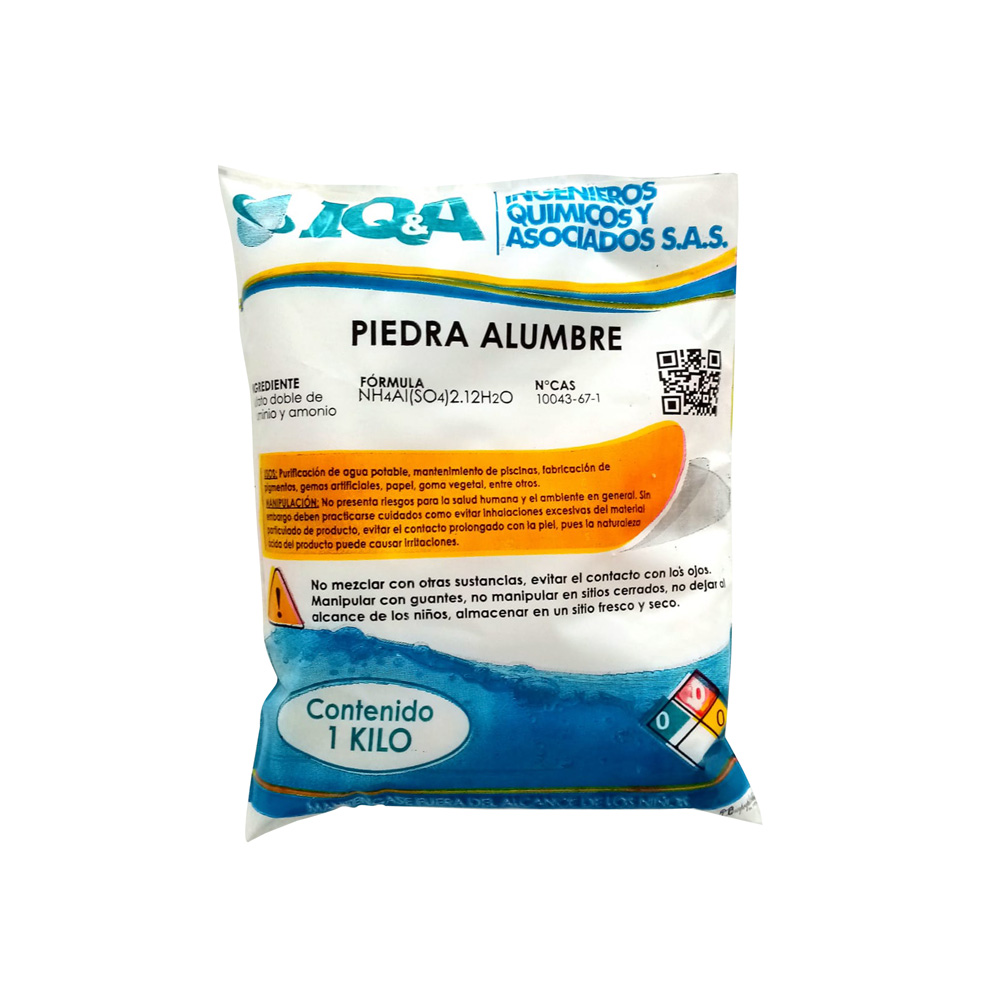
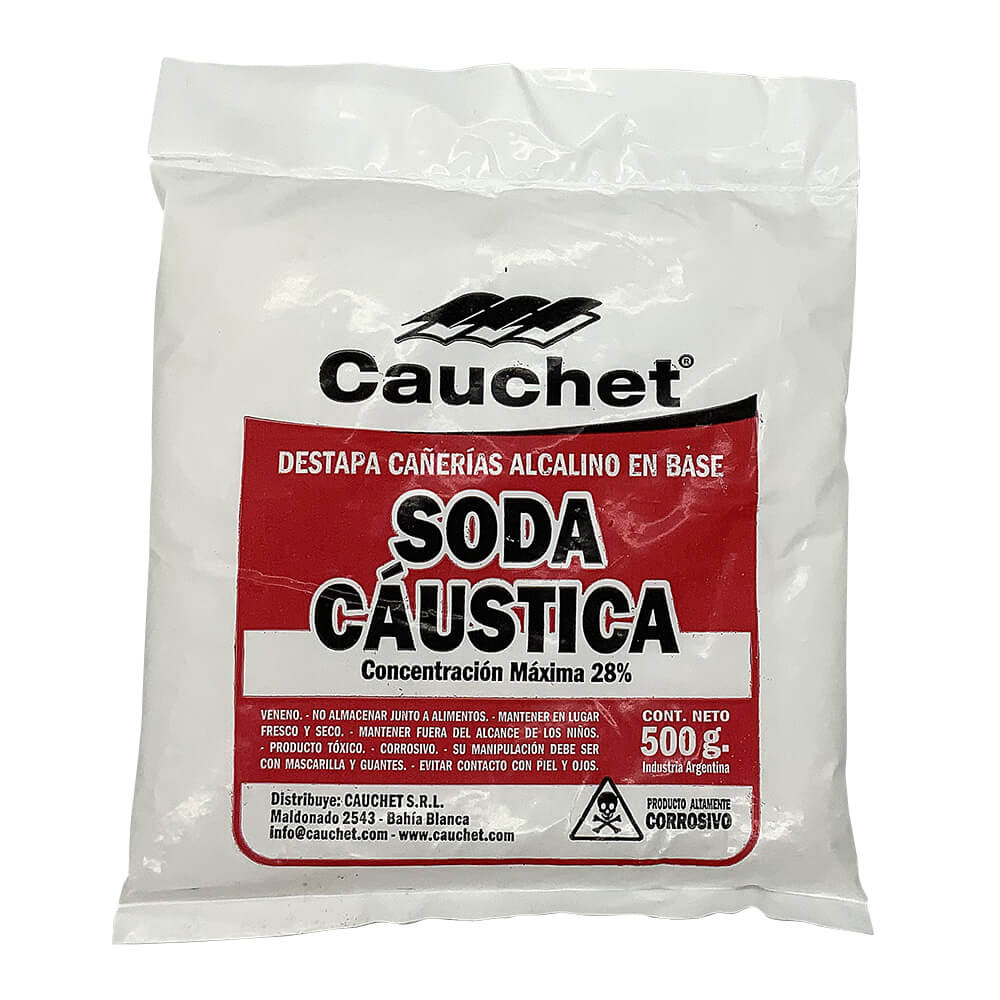
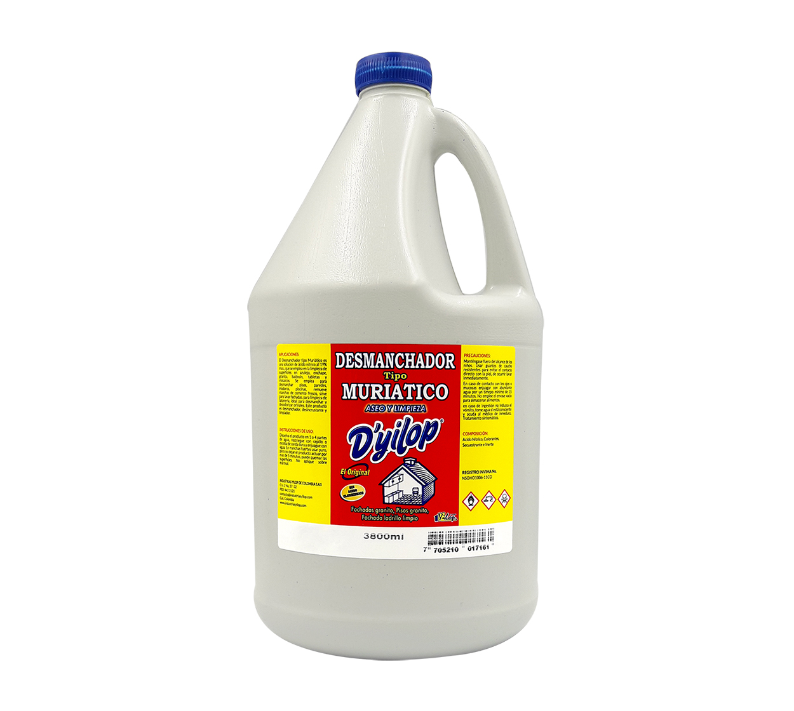
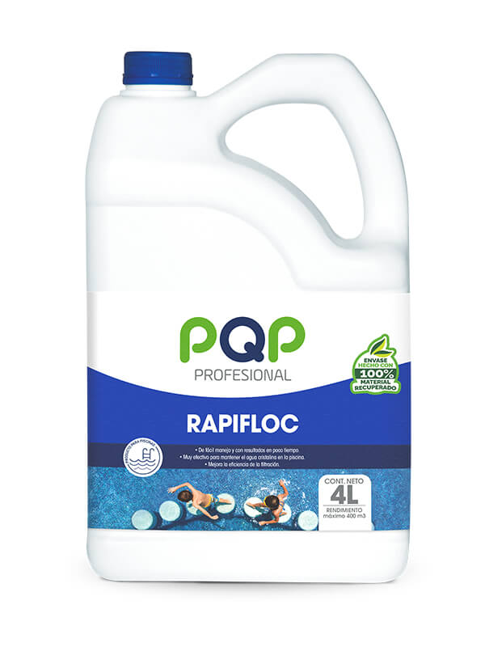
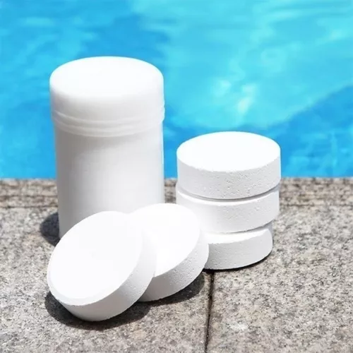

| IMAGEN | NOMBRE Y VALOR | MODO DE APLICACION |
|---|---|---|
|  | CLORO AL 91% POR KILO $ 13.000= | Destruye bacterias y algas, ayuda a tener cloro residual en el agua, tiende a subir PH Aplicacion 3 Gramos por metro cubico, debe acompañarse de la soda |
|  | CLORO AL 70% POR KILO $ 13.000= | Destruye bacterias y algas del agua, tiende a bajar PH Aplicacion 5 Gramos por metro cubico, preferiblemente en la noche |
|  | SULFATO ALUMINIO A POR KILO $ 4.500= | Decanta,se utiliza cuando haya presencia excesiva de algas, o este este verde Aplicacion 1 kilo por cada 50 metros cubicos, aspirar despues de 10 horas |
|  | PIEDRALUMBRE POR KILO $ 5.500= | Decanta,se utiliza cuando el agua esta turbia y lechosa Aplicacion 1 kilo por cada 100 metros cubicos,despues de aplicacion cepillar piscina |
|  | SODA CAUSTICA POR KILO $ 8.000= | Sube PH del agua y lava linea de flotacion Debe medirse el PH primero para definir aplicacion Si el PH esta menor de 7.2, aplicar 1 kilo por cada 100 M3 |
|  | ACIDO MURIATICO POR GALON $14.000= | Baja el PH del agua Debe medirse el PH primero para definir aplicacion Si el PH es mayor de 7.2, aplicar 1/5 litro por cada 100 metros cubicos |
|  | CLARIFICADOR FLOCULANTE GALON $ 24.000= | Clarifica, Flocula, y decanta de una forma mas rapida Aplicar 200 Ml por cada 50 metros cubicos, Poner el agua a recircular por 3 horas |
|  | CLORO EN PASTILLAS POR KILO $ 15.000= | Ayuda a que el agua tenga cloro residual todo el tiempo Se ponen 2 pastillas en el clorinado, cada 2 semanas |